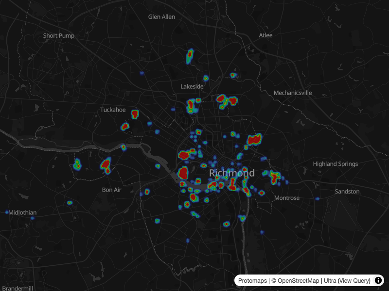
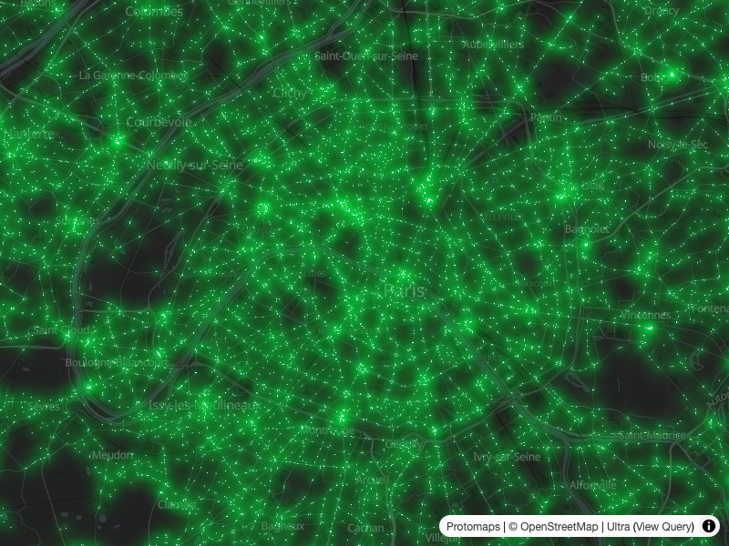
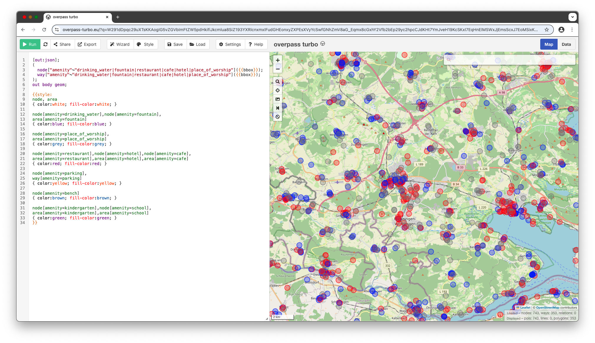
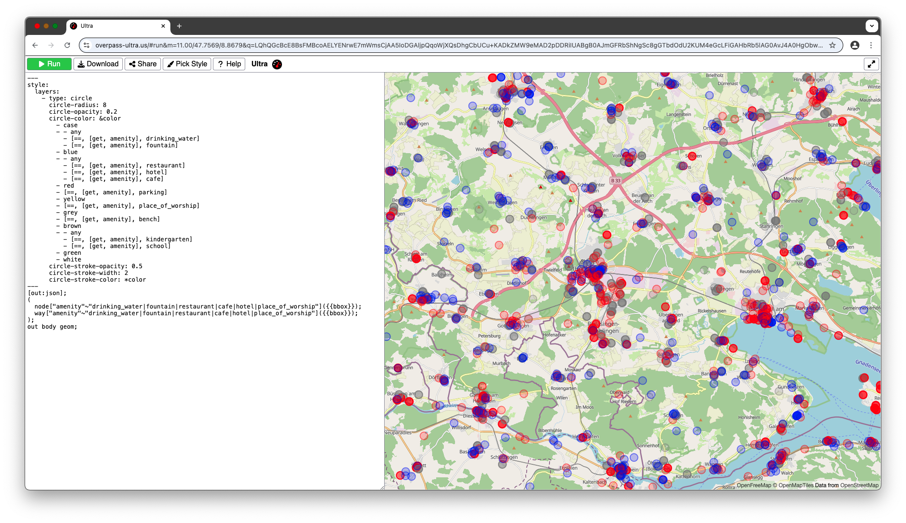
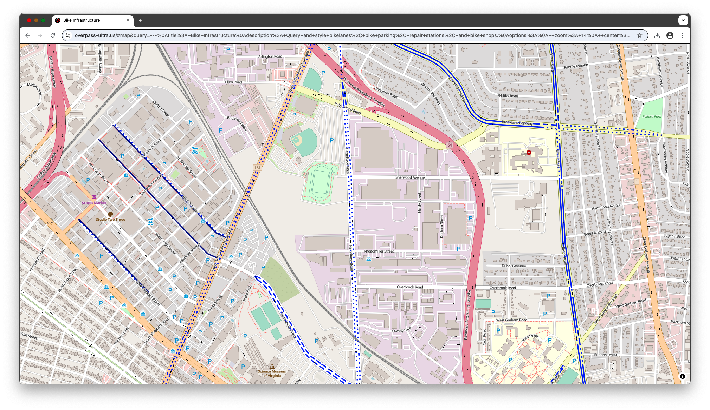
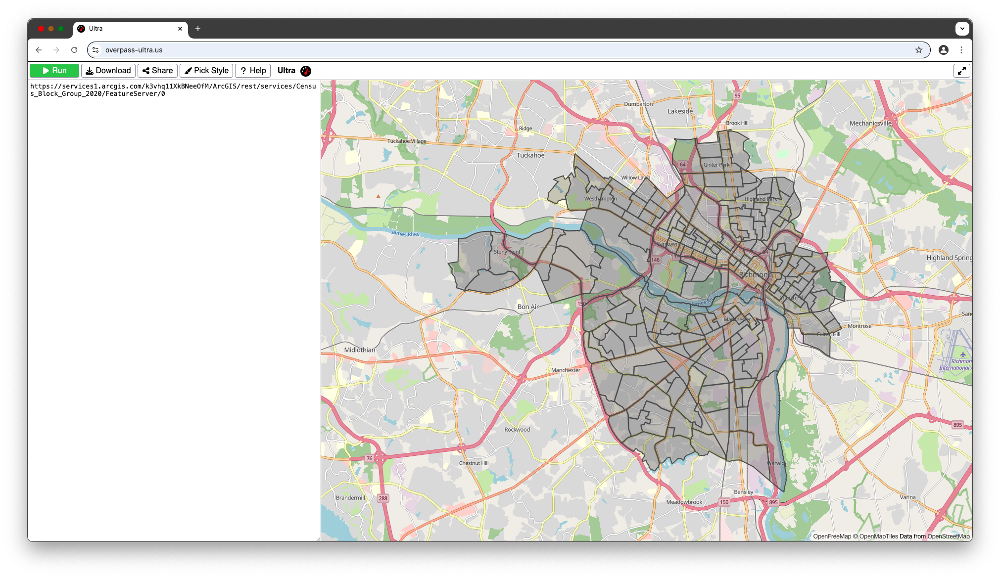

class: center, middle # Making maps with Ultra ### Daniel Schep --- ### Introduction <span style="font-size: .5em">overpass-turbo.eu</span> <img style="vertical-align: middle" src="https://camo.githubusercontent.com/21bde99de8822cfb3badba8e8fdf5e62630d2d14a2195edf0d7d542c0c4754cf/68747470733a2f2f7261776769742e636f6d2f4c6561666c65742f4c6561666c65742f6d61696e2f7372632f696d616765732f6c6f676f2e737667" width="50%"> <span style="font-size: 3em"> + MapCSS</span> <img src="https://wiki.openstreetmap.org/w/images/a/a4/Turbo-mapcss-ex1.png" width="45%"> <img src="https://wiki.openstreetmap.org/w/images/8/85/Turbo-mapcss-ex2.png" width="45%"> --- ### Introduction <span style="font-size: .5em">overpass-ultra.us</span> <img style="vertical-align: middle" src="https://raw.githubusercontent.com/maplibre/maplibre.github.io/refs/heads/main/public/img/maplibre-logos/maplibre-logo-dark-transparent-bg.png" width="50%">   --- ### Performance <span style="font-size: .5em">overpass turbo</span> <video width="100%" controls> <source src="./assets/turbo.webm"/> </video> --- ### Performance <span style="font-size: .5em">Ultra</span> <video width="100%" controls> <source src="./assets/ultra.webm"/> </video> --- ### Styling <span style="font-size: .5em">Overpass turbo - MapCSS</span>  --- ### Styling <span style="font-size: .5em">Ultra - MapLibre</span>  --- ### Styling <span style="font-size: .5em"> differences with MapLibre style spec</span> * No need to specify `source` when styling query result * Extend existing `style.json` ``` style: extends: https://tiles.openfreemap.org/styles/liberty layers: ... ``` * YAML, including support for anchors ``` circle-color: &color red circle-stroke-color: *color ``` * `paint` & `layout` keys at layer root ``` - type: circle paint: circle-color: red ``` vs ``` - type: circle circle-color: red ``` --- ### Styling <span style="font-size: .5em">Vector style benefits</span>  --- ### Beyond Overpass <span style="font-size: .5em">query providers</span> <div style="float:right"> <code>+</code> default provider. <br><code>*</code> detected by <code>auto</code> provider. </div> <ul> <li><code>auto+</code></li> <li><code>overpass*</code></li> <li><code>ohsome</code></li> <li><code>sparql</code></li> <li><code>geojson*</code></li> <li><code>kml*</code></li> <li><code>gpx*</code></li> <li><code>tcx*</code></li> <li><code>osmxml*</code></li> <li><code>osmjson*</code></li> <li><code>esri*</code></li> <li><code>raster*</code></li> <li><code>vector*</code></li> <li><code>raw*</code></li> <li><code>osmWebsite*</code></li> <li><code>osmWiki*</code></li> <li><code>taginfo*</code></li> </ul> --- ### Beyond Overpass <span style="font-size: .5em">planet-scale queries with QLever</span> <video width="100%" controls> <source src="./assets/qlever.webm"/> </video> --- ### Beyond Overpass <span style="font-size: .5em">Esri MapServer/FeatureServer</span>  --- ### Comparison to other tools <span style="font-size: .5em">overpass turbo</span> | | Ultra | overpass turbo | |-|-|-| |OverpassQL/XML|🟢|🟢| |Query wizard |🔴|🟢| |Syntax highlighting |🔴|🟢| |Short links|🔴|🟢| |Geocoding support|🔴|🟢| |Non-spatial results|🔴|🟢| |Popup customization|🟢|🔴| |Load queries from gists|🟢|🔴| |Load queries from URLs|🟢|🔴| |Styling|MapLibre|MapCSS| --- ### Comparison to other tools <span style="font-size: .5em">geojson.io</span> | | Ultra | geojson.io | |-|-|-| |Text-based editing|🟢|🟢| |Graphical editing|🔴|🟢| |Tabluar editing|🔴|🟢| |Syntax highlighting |🔴|🟢| |GeoJSON simple styling|🟢|🟢| |MapLibre styling|🟢|🔴| --- ### Comparison to other tools <span style="font-size: .5em">Maputnik</span> | | Ultra | Maputnik | |-|-|-| |Graphical editing|🔴|🟢| |Textual editing|🟢|🟠| --- ### What's next? <br><br><br> * Export options * `style.json` * HTML * Turf.js integration --- ### That's all folks! <br><br><br> * Use it: [overpass-ultra.us](https://overpass-ultra.us) * Documentation: [overpass-ultra.us/docs](https://overpass-ultra.us/docs) * These slides: [ultra-mapping-usa-2025.glitch.me](https://ultra-mapping-usa-2025.glitch.me) * Source code: [gitlab.com/trailstash/ultra](https://gitlab.com/trailstash/ultra) * Contact me: * @Daniel Schep on OSM US Slack * @dschep@mastodon.social on Mastodon